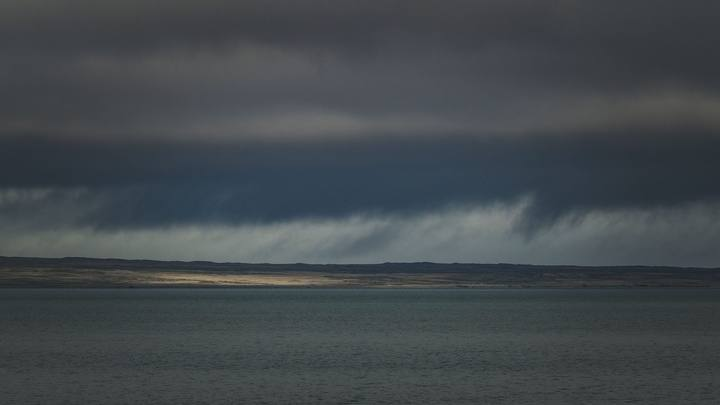

Santa Catarina · ServiçoDefesa Civil alerta para temporais em Santa Catarina até domingo
O aviso de duas semanas atrás, para comparar o tamanho de um e de outro.
Na quarta o aviso nomeia quatro regiões. Na quinta ele fala em todas, e aí o litoral daqui entra na conta.
Em 30 segundos · Modo de Leitura, formato original Santa Informa
A Defesa Civil de Santa Catarina publicou na tarde desta terça-feira o aviso nº 149/2026. Uma frente fria se aproxima e favorece temporais isolados entre quarta (19) e quinta-feira (20).
Na quarta o risco se concentra entre o fim da manhã e o começo da noite no Planalto Sul, Litoral Sul, Alto Vale do Itajaí e Grande Florianópolis. Na quinta o tempo muda no Grande Oeste de madrugada e avança pelas demais regiões durante a tarde.
O risco é baixo a moderado para destelhamento, queda de galho e de árvore, dano na rede elétrica e alagamento pontual. A partir de sexta-feira (21) o tempo melhora.
Santa CatarinaPublicada em Redação Santa Informa
A terça-feira foi de calor no litoral catarinense, fora de hora para agosto. O monitoramento das 17h da Defesa Civil registrou entre 22 °C e 33 °C no litoral e no Vale do Itajaí, com o tempo estável na maior parte do estado. É esse calor acumulado que carrega o ar e prepara o que vem pela frente.
O aviso nº 149/2026, elaborado às 14h40 de terça-feira pelo meteorologista Fernando Rafael, avisa que a aproximação de uma frente fria volta a favorecer temporais isolados em várias regiões de Santa Catarina entre quarta (19) e quinta-feira (20).
Na quarta-feira, as instabilidades se concentram entre o final da manhã e o início da noite, e o aviso nomeia quatro regiões: Planalto Sul, Litoral Sul, Alto Vale do Itajaí e Grande Florianópolis. A faixa que vai de Porto Belo a Itajaí não está nomeada nesse primeiro dia.
Na quinta-feira, o texto muda de tom. O tempo vira no Grande Oeste já no final da madrugada e de manhã, e avança pelas demais regiões durante a tarde. Aí não sobra ninguém de fora, e o litoral daqui entra na conta. Nesse período há condições para chuva com raios e temporais isolados com granizo e rajadas de vento.
Com o afastamento da frente fria e a entrada de ar frio e seco, o tempo volta a melhorar em todas as regiões a partir de sexta-feira (21).
O risco apontado é baixo a moderado, e está ligado a destelhamento, dano na rede elétrica, queda de galho e de árvore e alagamento pontual. As recomendações são três e são simples: durante o temporal, procurar lugar abrigado, longe de janela e de objeto que o vento possa arremessar; com vento forte, não transitar nem se abrigar perto de árvore, placa, muro e poste de energia; e, com chuva intensa, nunca atravessar rua alagada nem ponte submersa.
Em caso de ocorrência, o telefone da Defesa Civil é o 199 e o do Corpo de Bombeiros é o 193.
Dá para receber o alerta no celular sem depender de rede social. Basta mandar o CEP por mensagem de texto para o número 40199, e a Defesa Civil passa a avisar por SMS quando houver risco na região cadastrada. O serviço é gratuito.
A Defesa Civil de Itapema está distribuindo nas escolas do município uma cartilha sobre o El Niño que ensina exatamente isso, junto com a montagem do kit de emergência de casa: água, alimento, remédio, documento, lanterna e carregador portátil. Vale pedir uma para o filho trazer.
O resumo de 30 segundos está no topo e a versão completa é o texto acima. Aqui ficam as três leituras da casa sobre o mesmo assunto.
Clara, a otimista
A melhor notícia do aviso está no fim dele: sexta o tempo abre, com ar frio e seco. Fim de semana limpo no litoral.
E aviso publicado com um dia de antecedência é aviso que serve para alguma coisa. Dá tempo de recolher a lona da obra, guardar o vaso da sacada e avisar o vizinho que estaciona embaixo da árvore. Metade do estrago de temporal é coisa que dava para tirar da frente na véspera.
Seu Prudêncio, o criterioso
Merece atenção a diferença entre os dois dias. Na quarta o aviso nomeia quatro regiões e a nossa faixa não está entre elas. Na quinta ele fala em todas as regiões durante a tarde. Quem ler rápido pode achar que a quarta é o dia de cuidado aqui, e não é bem isso.
Vale acompanhar também o que o texto não diz. Sem milímetro de chuva e sem quilômetro por hora de rajada, o morador não consegue medir se guarda o carro ou se só fecha a janela. Uma sugestão útil seria a Defesa Civil publicar a faixa esperada, mesmo que aproximada, como faz em aviso de vendaval.
Feita a ressalva, o aviso está bem construído. Separa dia por dia, dá janela de horário, nomeia as regiões e lista o que pode dar errado. É mais informação útil do que costuma aparecer em previsão de tempo. Isso conta.
Caco, o sarcástico
Chegou a 33 graus no litoral na terça, em pleno agosto. Dois dias depois é granizo. Santa Catarina não tem clima, tem temperamento.
E o aviso pede para não se abrigar embaixo de árvore durante o vendaval. Todo ano a mesma recomendação, e todo ano tem gente parada embaixo da figueira esperando a chuva passar.
Deixando a piada de lado, cadastrar o CEP no 40199 leva dez segundos e é a coisa mais barata que você faz pela sua casa esta semana.
Fontes: Defesa Civil de Santa Catarina, aviso nº 149/2026, Monitoramento Meteorológico DC/SC de 18 de agosto e Prefeitura de Itapema.

Santa Catarina · ServiçoO aviso de duas semanas atrás, para comparar o tamanho de um e de outro.
Como foi da última vez que uma frente fria passou por aqui com vento forte.
O ar frio e seco que entra depois da frente é o mesmo que fez isso.